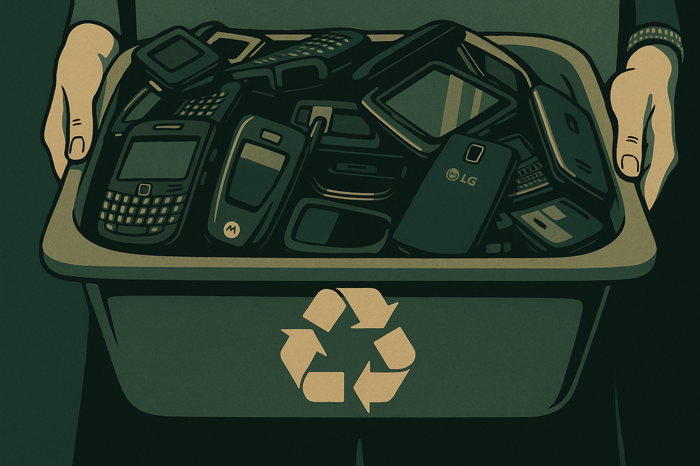

Por que reciclar celulares?
Os celulares modernos são verdadeiros concentrados de tecnologia. Em sua composição, há metais pesados como chumbo, mercúrio e cádmio, além de metais preciosos como ouro, prata e cobre. Quando descartados de forma incorreta, esses materiais podem representar sérios riscos ao meio ambiente e à saúde pública.
Reciclar celulares é essencial para evitar a contaminação ambiental, reduzir o uso de recursos naturais e garantir que esses materiais sejam reaproveitados de maneira segura e eficiente.

Quais os impactos do descarte incorreto?
O descarte inadequado de celulares pode provocar uma série de problemas ambientais e sociais, incluindo:
- Contaminação do solo e da água: Componentes tóxicos podem vazar dos aparelhos em lixões ou aterros, poluindo o solo e alcançando lençóis freáticos e rios.
- Prejuízos à saúde: Catadores e recicladores informais, sem a devida proteção, podem entrar em contato com substâncias perigosas, desenvolvendo problemas respiratórios, neurológicos e até câncer.
- Desperdício de recursos naturais: Metais preciosos presentes nos aparelhos poderiam ser reutilizados na fabricação de novos eletrônicos, poupando extração mineral e diminuindo o impacto ambiental.
Como descartar corretamente?
-
Leve até pontos de coleta autorizados: Lojas de eletrônicos, operadoras de telefonia e programas ambientais como o da Green Eletrôn oferecem locais próprios para recebimento de celulares usados.
- Utilize a logística reversa: Fabricantes como Samsung, Apple e Motorola mantêm programas para receber de volta seus próprios produtos, destinando-os à reciclagem.
-
Participe de campanhas de reciclagem: Fique atento a ações promovidas por escolas, empresas e prefeituras que incentivam o descarte consciente.
Onde encontrar um ponto de coleta?
Consulte o site do projeto Lixo Eletroeletrônico para localizar os pontos de descarte mais próximos da sua região:
https://lixoeletronicoemgoiania.com.br
Curiosidade: você carrega um pedaço da tabela periódica no bolso!
Um único smartphone pode conter entre 40 a 60 elementos químicos — isso representa cerca de um terço da tabela periódica. Esses elementos cumprem funções vitais como conduzir eletricidade, gerar cores nas telas, armazenar energia e garantir durabilidade.
Isso reforça a importância da reciclagem: além de proteger o meio ambiente, ela ajuda a recuperar materiais escassos e valiosos que, de outra forma, seriam perdidos.
Dica importante antes de descartar seu celular:
✔ Remova o chip e o cartão de memória
✔ Faça a formatação de fábrica
Esses cuidados ajudam a proteger seus dados pessoais antes do descarte.